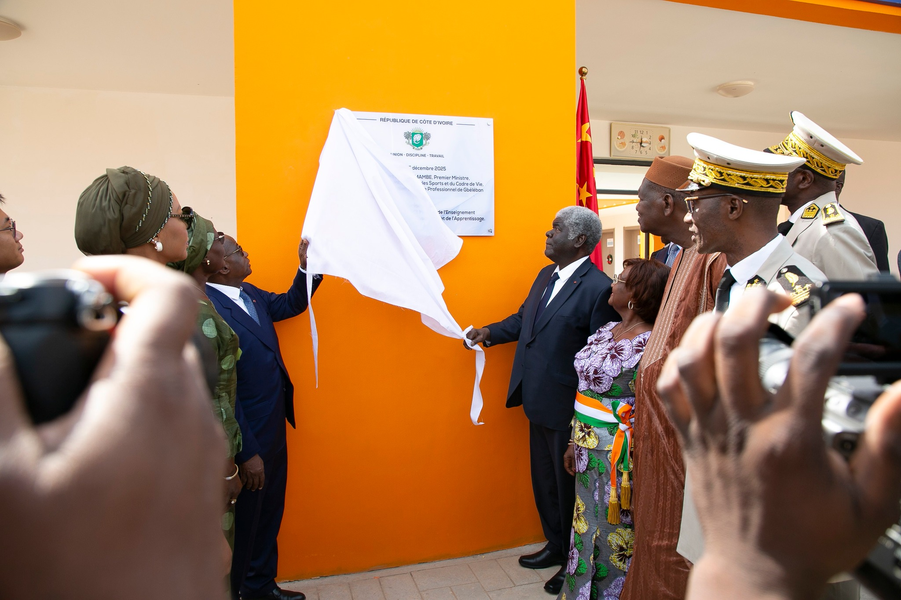
de GbélébanLPG • Côte d'Ivoire • Réseau AVIC
Former les
Leaders
de demain
Premier lycée professionnel agricole de la région du Kabadougou, inauguré le 15 décembre 2025 par le Premier Ministre Robert Beugré Mambé.
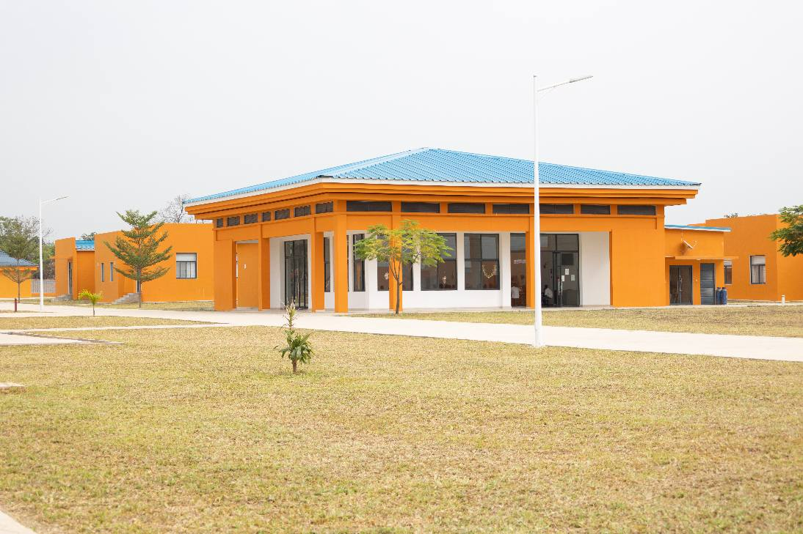
Un lycée au service du développement de la région
Situé à Gbéléban, chef-lieu du Kabadougou, le LPG est né de la coopération sino-ivoirienne. Sur 4,15 hectares, 19 bâtiments modernes accueillent 300 apprenants dont 225 à l'internat.
Le lycée en images
Découvrez les installations, les filières et la vie quotidienne au LPG.
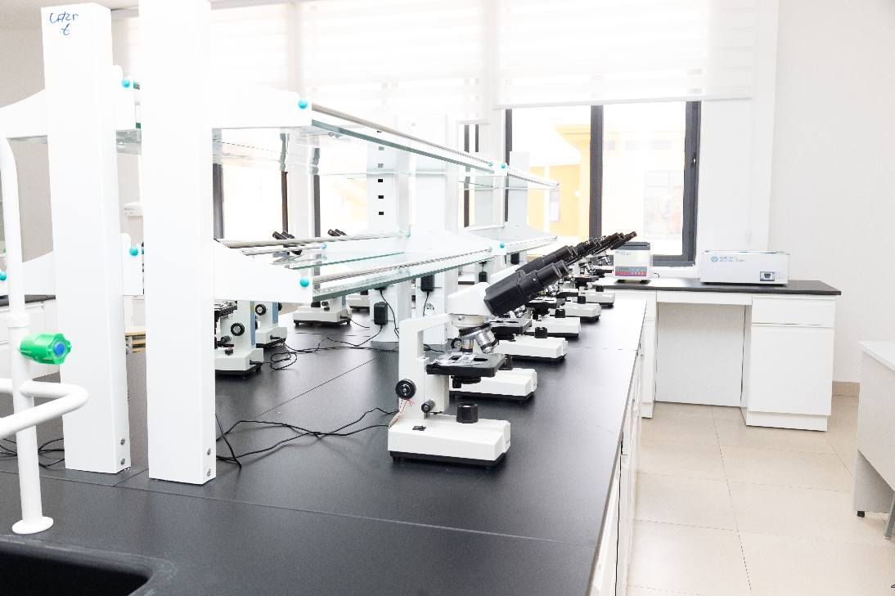
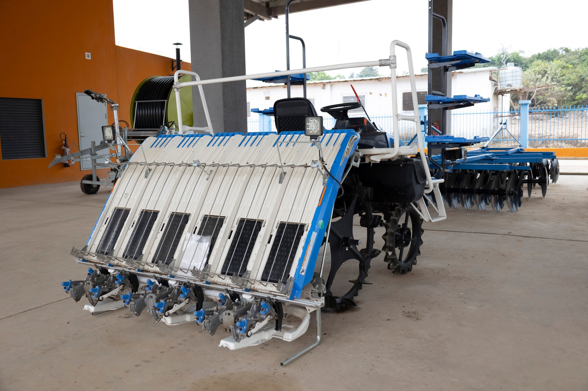

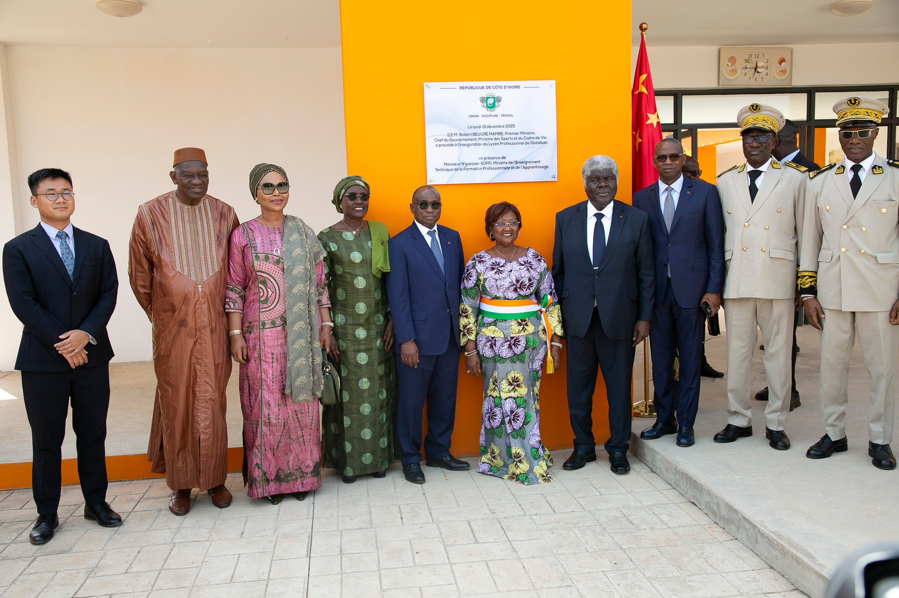
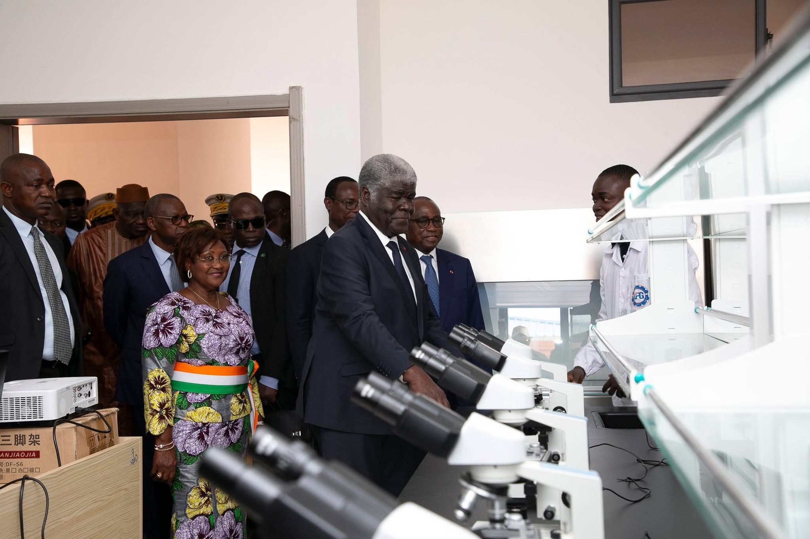
4 filières pour votre avenir
Des formations professionnelles adaptées aux besoins du secteur agricole ivoirien.
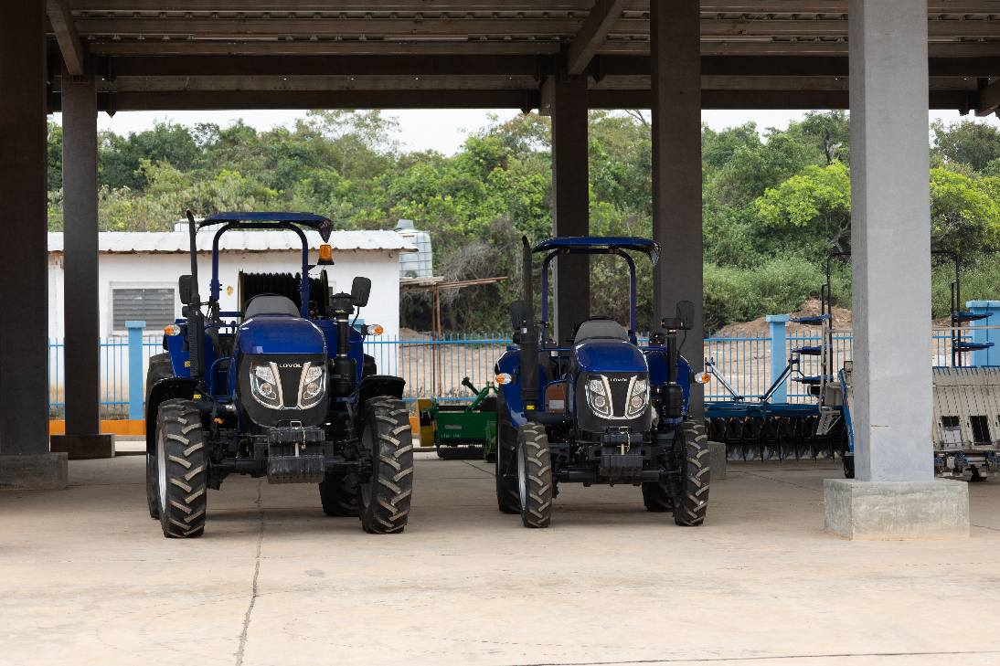
Agriculture Générale
Production végétale, cultures maraîchères, techniques culturales et gestion d'exploitations agricoles.
- Cultures vivrières et maraîchères
- Agroforesterie
- Gestion d'exploitation
- Débouchés : Agri-entrepreneur, technicien

Élevage & Productions Animales
Élevage bovin, ovin, caprin, aviculture. Santé animale et valorisation des productions.
- Aviculture et élevage bovin
- Santé et alimentation animale
- Transformation des produits
- Débouchés : Éleveur, technicien vétérinaire
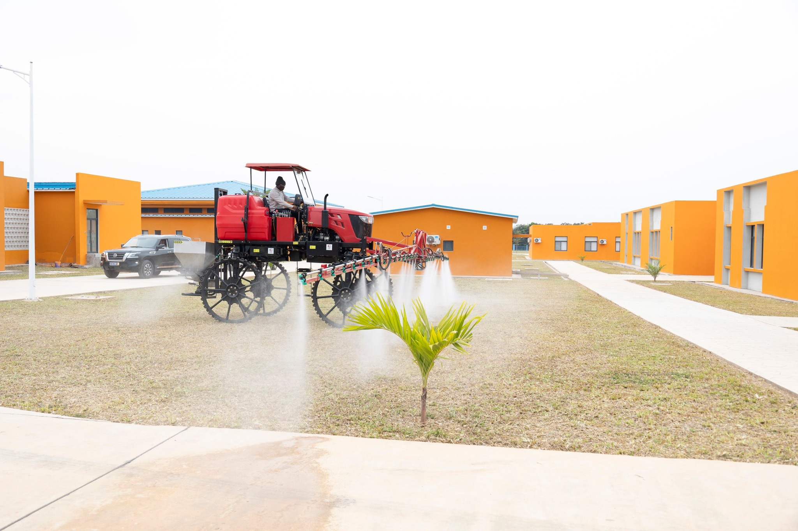
Machinisme Agricole
Conduite, entretien et réparation des engins agricoles. Mécanisation de l'agriculture.
- Tracteurs et engins agricoles
- Diagnostic et réparation
- Irrigation et équipements
- Débouchés : Mécanicien agricole
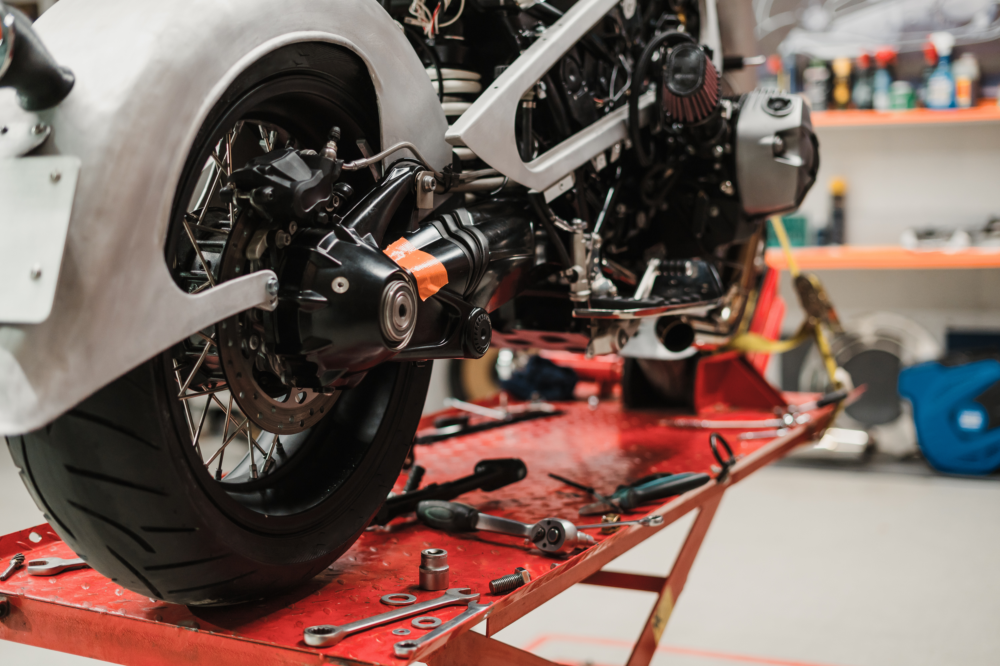
Mécanique Moto
Entretien et réparation de motocyclettes. Électronique embarquée et gestion d'atelier.
- Moteurs 2 et 4 temps
- Électricité et diagnostic
- Gestion d'atelier
- Débouchés : Mécanicien moto, gérant atelier
Diplômes & Parcours
Trois niveaux de certification reconnus par l'État ivoirien.
BT — Brevet de Technicien
3 ansFormation complète — Entrée après le BEPC. Stage professionnel obligatoire. Examen national.
- Entrée en 2de après le BEPC
- Stage professionnel obligatoire
- Examen national de fin de cycle
CAP — Certificat d'Aptitude Professionnelle
2 ansFormation courte pratique. Idéal pour une insertion rapide. Entrée après la 3e ou le CEPE.
- Formation 70% pratique
- Débouchés immédiats
- Diplôme reconnu nationalement
Formation Qualifiante
3–12 moisFormations courtes pour professionnels. Pas de condition de diplôme. Attestation officielle.
- Modules ciblés par compétence
- Flexibilité horaire
- Certificat de formation
Votre parcours en 5 étapes
La vie au lycée
Un cadre épanouissant alliant formation, sport et développement personnel.
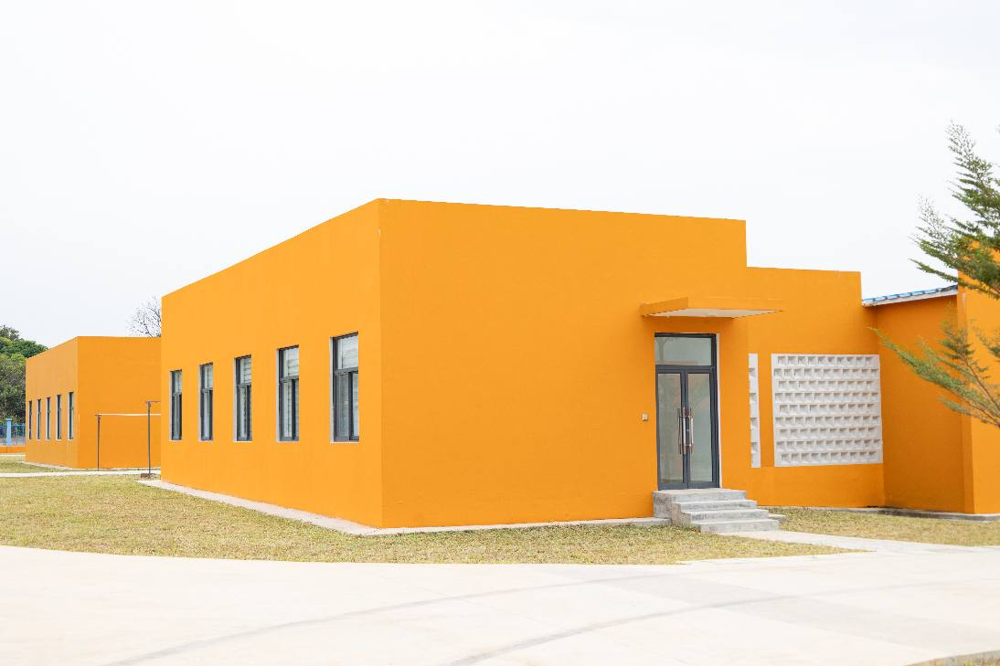
Un internat moderne et sécurisé
225 places dans des chambres équipées. Réfectoire, salle d'étude surveillée, infirmerie — un cadre propice à la réussite scolaire.
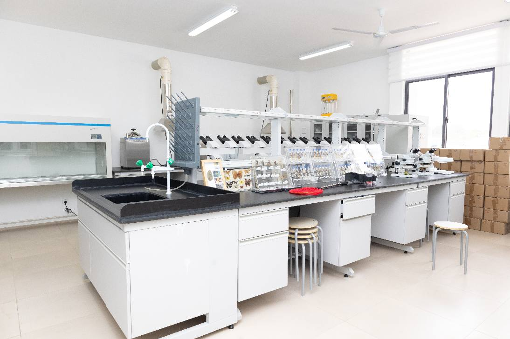
Une pédagogie orientée compétences
70% pratique, 30% théorique. Enseignants qualifiés, méthodes modernes adaptées aux réalités du terrain agricole.
Sport et épanouissement
Terrain de football, piste d'athlétisme, salle polyvalente. Le sport fait partie intégrante du programme éducatif du LPG.
Le Champ-Ferme-École
Outil pédagogique central du LPG. Cultures maraîchères, élevage, expérimentations agronomiques — un laboratoire à ciel ouvert.
Des infrastructures de qualité
19 bâtiments modernes sur 4,15 hectares pour un environnement d'apprentissage optimal.
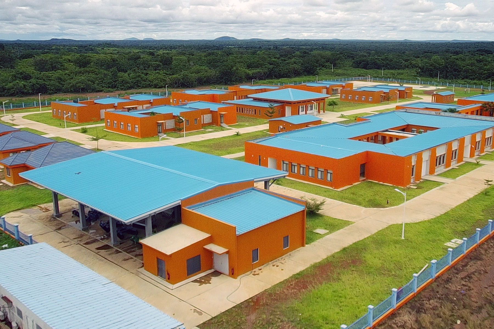
Bâtiment principal
Administration, salles de cours, bibliothèque
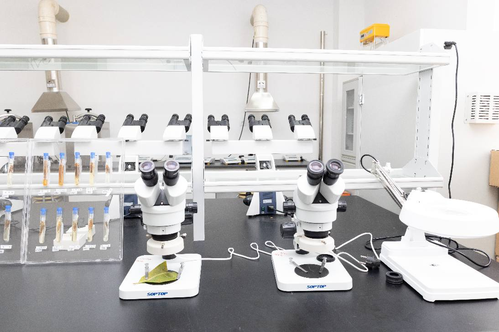
Ateliers spécialisés
Équipements professionnels
Internat
225 places — Dortoirs & réfectoire
Terrain de sport
Football, athlétisme
Laboratoire & salle info
Équipements pédagogiques modernes
Un réseau solide
🏛️ Réseau AVIC
Le LPG Gbéléban fait partie du réseau AVIC — 7 lycées professionnels répartis sur le territoire ivoirien, financés par la coopération sino-ivoirienne.
Partenaires clés
Comment s'inscrire ?
Conditions d'admission
Formulaire de pré-inscription
Nous contacter
Adresse
Lycée Professionnel de Gbéléban
Gbéléban, Région du Kabadougou
Côte d'Ivoire
Horaires d'accueil
Lundi – Vendredi
7h30 – 17h30
Samedi : 8h00 – 13h00
© 2025–2026 Lycée Professionnel de Gbéléban — Tous droits réservés